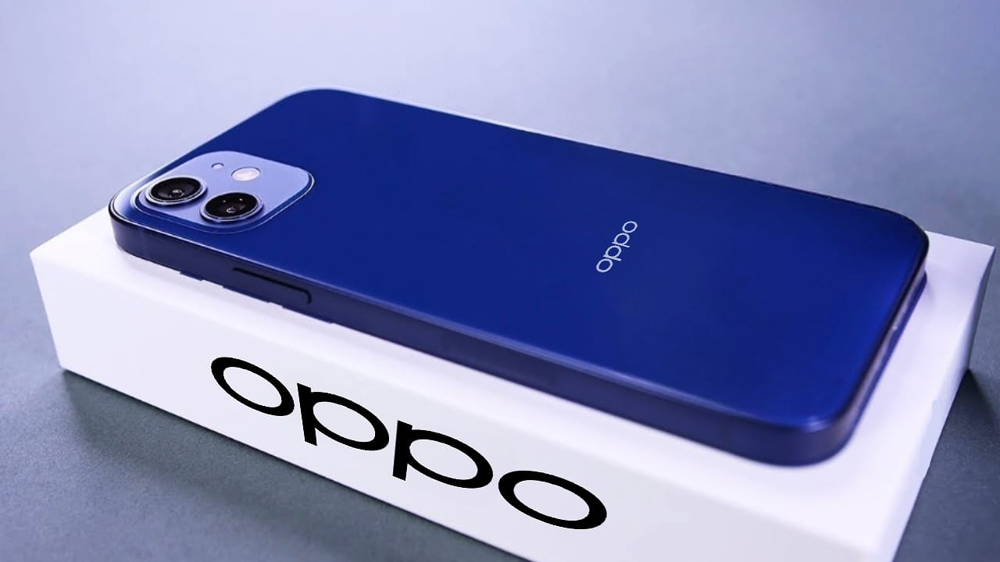

Oppo Find X7 Pro: नया 232MP कैमरा और 6700mAh बैटरी वाला स्मार्टफोन
Oppo Find X7 Pro का परिचय
ओप्पो अपने नवीनतम फ्लैगशिप, Find X7 Pro के साथ स्मार्टफोन फोटोग्राफी में क्रांति लाने के लिए तैयार है। इस अत्याधुनिक डिवाइस में प्रभावशाली 232MP का प्राइमरी कैमरा है, जो अद्भुत रूप से विस्तृत छवियों और वीडियो को कैप्चर करता है। विशाल 6700mAh की बैटरी के साथ, Find X7 Pro पूरे दिन की पावर और एक प्रीमियम उपयोगकर्ता अनुभव का वादा करता है।
Specifications
- डिस्प्ले: 6.67 इंच AMOLED, 1440x3168 पिक्सल, 144Hz रिफ्रेश रेट
- प्रोसेसर: Qualcomm Snapdragon 8 Gen 2
- रैम: 12GB
- स्टोरेज: 128GB/256GB
- कैमरा: 232MP + 13MP + 5MP रियर, 43MP फ्रंट
- बैटरी: 6700mAh, 67W फास्ट चार्जिंग
Display
Oppo Find X7 Pro में एक चिकना और आधुनिक डिज़ाइन है, जिसमें ब्लैक ग्लास बैक और एक पतली प्रोफ़ाइल है। 6.67 इंच का AMOLED डिस्प्ले जीवंत रंग, गहरे काले रंग और एक सहज 144Hz रिफ्रेश दर प्रदान करता है, जो एक इमर्सिव दृश्य अनुभव के लिए है।
Camera
Find X7 Pro का मुख्य आकर्षण निस्संदेह इसका 232MP का प्राइमरी कैमरा है। यह सेंसर अविश्वसनीय विवरण कैप्चर करता है, जिससे आप आश्चर्यजनक परिदृश्य, पोर्ट्रेट और कम रोशनी वाली तस्वीरें कैप्चर कर सकते हैं। अतिरिक्त 13MP और 5MP सेंसर विभिन्न शूटिंग परिदृश्यों के लिए बहुमुखी प्रतिभा प्रदान करते हैं।
Battery
Qualcomm Snapdragon 8 Gen 2 द्वारा संचालित, Find X7 Pro मांग वाले कार्यों और गेमिंग के लिए सहज प्रदर्शन प्रदान करता है। विशाल 6700mAh की बैटरी सुनिश्चित करती है कि आप बिना किसी चिंता के पूरे दिन अपने फोन का उपयोग कर सकते हैं।
Availability
Oppo Find X7 Pro को भारत में मार्च 2025 में लॉन्च किए जाने की उम्मीद है। मूल्य निर्धारण विवरणों की अभी आधिकारिक घोषणा नहीं की गई है, लेकिन इसके एक प्रीमियम फ्लैगशिप डिवाइस के रूप में स्थित होने की उम्मीद है।